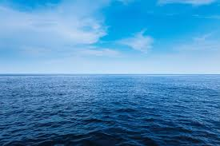

Uma equipe de pesquisadores anunciou hoje uma descoberta histórica para a biologia. O novo espécime possui características únicas e bioluminescentes, o que ajuda a entender melhor a vida nas zonas abissais.
Segundo os especialistas, a criatura se alimenta de pequenos detritos e pode viver por décadas sem contato com a luz solar.
volte para a página principal aqui